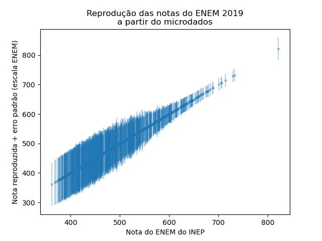

Relatório 1 - Gabriel#
IDENTIFICAÇÃO#
Edital PUB 2023 – Código do projeto: 1950
Período: 01/09/2023 a 31/08/2024
Nome do Orientador: Prof. Dr. Ewout Ter Haar
Nome do Aluno: Gabriel Araujo Hirayama
Título do Projeto: Os limites e possibilidades de testes padronizados em larga escala para fins de processos de seleção para o ensino superior
Objetivos de pesquisa#
Por meio deste projeto, buscamos investigar as incertezas nas notas do Exame Nacional do Ensino Médio (ENEM), explorando as incertezas estatísticas, a partir de técnicas psicométricas para analisar as proficiências e erros padrão dos candidatos e neste processo analisar impacto de variáveis demográficas e investigar se as incertezas são dependentes, ou mesmo correlacionadas à elas, visando contribuir significativamente para o debate sobre a eficácia dos testes padronizados em larga escala e sua aplicação em processos seletivos para o ensino superior.
Ciência aberta e reprodutível#
Um objetivo paralelo deste projeto é exemplificar e boas práticas da chamada ciência aberta. Primeiro, isso significa que faremos uma tentativa de trabalhar de forma mais transparente possível, sempre zelando pela reprodutibilidade das nossas análises por meio de documentação, usando bibliotecas de código aberto e repositórios de código acessíveis a todos os interessados. Segundo, pretendemos comunicar nossos resultados ao público em geral, por meio de material explicativo que usa uma linguáge acessível.
Apresentação do problema#
A motivação do projeto visa analisar a metodologia de avaliação do ENEM e suas implicações, destacando a complexidade e a falta de transparência para/com os participantes sobre a Teoria da Resposta ao Item (TRI) usada na avaliação. Buscamos por meio da incerteza significativa nas notas, especialmente em extremos, questionar a validade do ENEM como critério de seleção justo e eficaz para o ensino superior, ficando clara a necessidade da comunicação acessível sobre a metodologia de cálculo das notas e consideração das incertezas na seleção de candidatos para cursos superiores.
O ENEM#
O Exame Nacional do Ensino Médio (ENEM), é o teste em larga escala mais conhecido do Brasil, foi criado em 1998 e começou a ser utilizado com critério de seleção para o ensino superior a partir de 2009, seu formato é constituído por 4 provas (Língua Portuguesa, Matemática, Ciências da Natureza e Ciências Humanas) + 1 Redação. Visando utilizar um critério de seleção que avalia não apenas os acertos nas provas, mas sim a proficiência do aluno em cada área do conhecimento foi escolhido o TRI como critério de avaliação da prova.
Teoria de Resposta ao Item#
A TRI, ou Teoria de Resposta ao Item, usa modelos estatísticos para calcular a chance de um aluno acertar uma questão com base na sua proficiência (Klein, 2013). A premissa diz que, quanto mais habilidoso o aluno, maior a probabilidade dele acertar a questão. A modelagem utilizada baseia-se em uma função logística de 3 parâmetros (Proficiência, Dificuldade e Chance de acerto ao acaso) para transformar o padrão de respostas (acertos e erros) do aluno em um uma nota que é, posteriormente, normalizada para a escala ENEM.
A aplicação da teoria da resposta ao item é frequente nas avaliações em testes de múltipla escolha aplicados em diversos países. No Brasil, a TRI é usada desde 1995 nas provas do Sistema Nacional de Avaliação da Educação Básica (Saeb), que mede o desempenho de estudantes do ensino fundamental e médio. Em 2009, foi usada pelo Enem pela primeira vez, com o objetivo de garantir a comparação das notas do exame daquele ano com os seguintes.
Preparação do ambiente#
Com intuito de iniciarmos o projeto utilizando boas práticas de ciência colaborativa, foram instalados e criados ambientes de trabalho virtuais no domínio https://hub.atp.usp.br que estão sempre em atualizados com o ambiente de colaboração de código aberto o atp/enem. Tal proposta foi escolhida por ser amplamente utilizada pela iniciativa pública e privada para colaboração de código, visto que o grupo do projeto é formado por dois alunos e o orientador, viu-se necessário uma medida dos 3 pesquisadores trabalharem juntos e ao mesmo tempo individualmente.
Neste ambiente, escolhemos por utilizar a linguagem de programação Python, por ser uma linguagem de alto nível e facilmente compreensível para pessoas que não dominam técnicas de programação, visando reproduzir os resultados divulgados pelo INEP foram instalados os seguintes pacotes, instalamos algumas bibliotecas básicas de análise e visualização de dados como: pandas numpy, matplotlib e seaborn, além disto utilizamos algumas bibliotecas da linguagem R específicas para análise de TRI como mirt e mirtCAT.
Pipeline de processamento dos dados#
Feito a preparação do ambiente computacional, foram armazenados todos os microdados obtidos no site do INEP referentes às edições disponíveis do ENEM desde 2009. Cada arquivo com microdados de um determinado ano contêm entre 3 e 8 milhões de linhas. Para mitigar o problema de lentidão no processamento dos dados aplicamos uma prática de amostragem randômica para cada análise. A amostra é composta por 1% das linhas dos dados originais da prova e ano desejado. Após esta amostragem foi feita uma filtragem categórica, removendo as ausências, treineiros, e notas zeradas. O filtro mais imporante é o que inclui somente candidatos que afirmem concluir o Ensino Médio no ano daquele ENEM,visto que nosso objetivo é explorar os limites e possíveis incertezas nas notas que são utilizadas como critério de seleção para o ingresso no ensino superior.
Veja como estes filtros são implementados:
def filterdf(df):
df = df[df["TP_PRESENCA_CN"] == 1] # presente nas 4 provas
df = df[df["TP_PRESENCA_CH"] == 1]
df = df[df["TP_PRESENCA_LC"] == 1]
df = df[df["TP_PRESENCA_MT"] == 1]
if "IN_TREINEIRO" in df.columns:
df = df[(df["IN_TREINEIRO"] == 0) | (df["IN_TREINEIRO"].isna())] # não é treineiro ou não existe
df = df[df["TP_ST_CONCLUSAO"].isin([1, 2])] # afirma que concluiu ou vai concluir EM
# não queremos as notas == 0
df = df.query("NU_NOTA_CH != 0 and NU_NOTA_CN != 0 and NU_NOTA_LC != 0 and NU_NOTA_MT != 0")
df.dropna(subset = ['TX_RESPOSTAS_CN','TX_RESPOSTAS_CH','TX_RESPOSTAS_LC','TX_RESPOSTAS_MT']) # achamos linhas com NaN para estas colunas!
return df
O resultado deste processamento é então guardado em arquivos locais com nomes na padrão enem_1_2022.csv (amostra de 1%, ano de 2022). A seguir, há outro passo de processamento, que converte as padrões de respostas para um formato adequada às bibliotecas de TRI que vamos usar.
Ambos os tipos de arquivos intermediários serão usados em passos seguintes das análises. Alguns resultados iniciais são relatados na seção a seguir.
Resultados preliminares#
Utilizando o ambiente de trabalho com os dados preparados, foram feitas as primeiras análises sobre as provas, em princípio a primeira tarefa foi desenvolver um método de conexão entre as linguagens R e Python, visto que os pacotes mais adequados, encontrados, para análise da TRI estão em bibliotecas de R. Esta conexão foi feita utilizando a biblioteca rpy2.
Feita a instalação, utilizamos os microdados filtrados em alguns notebooks para fazer análises exploratórias. Este trabalho culminou no desenvolvimento em funções de conveniencia que encapsulam atrás de interfaces convenientes as análises e contas mais usadas. O mais importante deles é a função score_inep(padr,prova = None,params = None, method="EAP") que calcula a nota usando TRI, dado um padrão de resposta e dado parámetros TRI dos itens, segundo o método especificado. Esta função é um empacotamento simples da função fscore do pacote mirt escrito para o arcabouço estastístico R.
A seguir, mostraremos o uso de algumas das funções que desenvolvemos, assim demonstrando o estado atual do nosso pipeline de análise de dados.
Visualizações simples dos microdados#
Com intuito de compreender melhor os dados, foram feitas algumas análises descritivas, tais como a distribuição das notas por escolaridade da mãe. Veja como é simples gerar um gráfico relativamente complexo em poucas linhas de código (fazemos uso do pacote seaborn, feito para análises exploratóras). Este código:
from util import load_sample
import seaborn as sns
amostra = load_sample(2022,5000)
q2map = {'A':'Nunca estudou',
'B':'Não completou o 5º ano do EF ',
'C':'Não completou o 9º ano do EF.',
'D':'Não completou o Ensino Médio.',
'E':'Não completou a Faculdade.',
'F':'Não completou a Pós-graduação.',
'G':'Completou a Pós-graduação.',
'H':'Não sei.'}
amostra['Q002'] = amostra['Q002'].map(q2map)
ho = q2map.values()
g = sns.catplot(amostra,kind='box',y='NU_NOTA_MT',hue="Q002",hue_order=ho,col='TP_SEXO',palette='viridis')
g.fig.subplots_adjust(top=0.85)
g.fig.suptitle("Nota ENEM 2022 Matemática\npor sexo e educação da mãe")
gera a distribuição das notas por escolaridade da mãe:
Um outro exemplo de como nosso trabalho até agora facilita muito as análises, veja mais um exemplo:
amostra_2 = load_sample(2010,5000)
q4_map = {'A':'Até 1 salário mínimo (até R$ 510,00). ',
'B':'De 1 a 3 salários mínimos (de R$ 510,00 até R$ 1.530,00).',
'C':'De 3 a 6 salários mínimos (de R$ 1.530,00 até R$ 3.060,00).',
'D':'De 6 a 9 salários mínimos (de R$ 3.060,00 até R$ 4.590,00). ',
'E':'De 9 a 12 salários mínimos (de R$ 4.590,00 até R$ 6.120,00).',
'F':'De 12 a 15 salários mínimos (de R$ 6.210,00 até R$ 7.650,00).',
'G':'Mais de 15 salários mínimos (mais de R$ 7.650,00). ',
'H':'Nenhuma renda.',
}
amostra_2['Q04'] = amostra_2['Q04'].map(q4_map)
leg = q4_map.values()
p = sns.catplot(amostra_2,kind='box',y='NU_NOTA_MT',hue="Q04",hue_order=leg,col='TP_SEXO',palette='viridis')
p.fig.subplots_adjust(top=0.85)
p.fig.suptitle("Nota ENEM 2010 Matemática\npor sexo e renda")
plt.savefig('figuras/rel1-por-sexo-renda.png');
Distribuição das notas por renda familiar autodeclarada
Análise dos itens e os parâmetros TRI do INEP#
Estas (e outras) descrições foram fundamentais para o entendimento das amostragens que trabalhamos, a partir destas distribuições, particularmente as distribuições temporais, e para aprofundar as análises sobre as implicações dos itens nas notas foi analisada a evolução dos parâmetros das questões, em especial os parâmetros: a, que representa a proficiência necessária dos b, que representa a dificuldade do item e o coeficiente bisserial R, que, mesmo não sendo utilizado no cálculo das médias pela TRI, pode ser levado em consideração para análises de qualidade de questões por meio da Teoria Clássica de Testes (TCT), bem como uma possível correlação entre eles.
Tais correlações não foram conclusivas para as análises realizadas, porém a partir delas foi possível levantar a hipótese de que os parâmetros divulgados pelo INEP podem possuir uma incerteza estatística que pode ser propagada para o resultado final da nota calculada pela TRI.
Reprodução do cálculo das notas pela INEP#
Com a infraestrutura que desenvolvemos conseguimos agora reproduzir perfeitamente (com algumas exceções intrigantes) a nota ENEM calculado e divulgado pelo INEP, usando somente as padrões de resposta de cada candidato e os parâmetros dos itens divulgado em 2022 pelo INEP. Veja a correlação perfeita:
Note que a nossa nota está numa escala com média zero e desvio padrão 1. Os mesmos dados, mas incluindo uma representação do erro padrão, como dado pelo cálculo da nota via IRT:

Como foi possível observar conseguimos reproduzir perfeitamente as notas divulgadas pelo INEP na prova de ciências da natureza de 2022, isso se aplica, também, as demais provas dos demais anos (com algumas exceções, que vamos investigar melhor. Todo o processo de reprodução das notas, bem como a adição da incerteza estatística podem ser encontradas no repositório do projeto (github.com/atp/enem).
Próximos passos#
Para a próxima fase do projeto, a equipe se concentra em três áreas-chave para melhorar a apresentação e o impacto das nossas análises. Primeiramente, serão dedicados esforços significativos para investigar e implementar métodos apropriados de visualização de dados, com um enfoque particular em representar notas e incertezas de maneira intuitiva e informativa. Essa etapa envolverá a exploração de ferramentas gráficas, que utilizam formatos interativos que possam facilitar a compreensão dos dados complexos. Em seguida, a equipe se empenhará na investigação de alternativas para a incorporação das incertezas estatísticas atreladas aos resultados do processo avaliativo nos processos de seleção. Esse processo será fundamental para garantir que nossas análises sejam robustas e justas.
Durante as primeiras semanas do projeto, foram levantadas diversas literaturas que abordam a Teoria Clássica de Testes (TCT), bom como a TRI, porém poucas obras passaram por uma revisão bibliográfica sistemática adequada, ficando assim pendente esta etapa do projeto para os próximos meses. Por fim, nos dedicaremos a divulgar nossas análises de maneira clara e interativa. Para isso, serão investigadas e analisadas plataformas e ferramentas que permitam aos usuários não apenas acessar as informações, mas também interagir com os dados de maneira significativa, promovendo assim uma compreensão mais profunda e um engajamento mais ativo com nossas descobertas. Através destas iniciativas, pretendemos não apenas aprimorar a qualidade do nosso trabalho, mas também torná-lo mais acessível e impactante para um público mais amplo.
Adesão ao cronograma estipulado#
Referências#
KLEIN, Ruben. Alguns aspectos da teoria de resposta ao item relativos à estimação das proficiências. Ensaio: avaliação e políticas públicas em educação, v. 21, n. 78, p. 35-55, 2013.
TRAVITZKI, Rodrigo. ENEM: limites e possibilidades do Exame Nacional do Ensino Médio enquanto indicador de qualidade escolar. 2013. Tese de Doutorado. Universidade de São Paulo.
DE MELO, WOLNEY CANDIDO. Erros de medida da Prova Brasil 2013 e sua influência no Ideb das escolas da Rede Municipal de Ensino de São Paulo: um estudo sobre os anos finais do Ensino Fundamental e seus desdobramentos para as políticas educacionais.